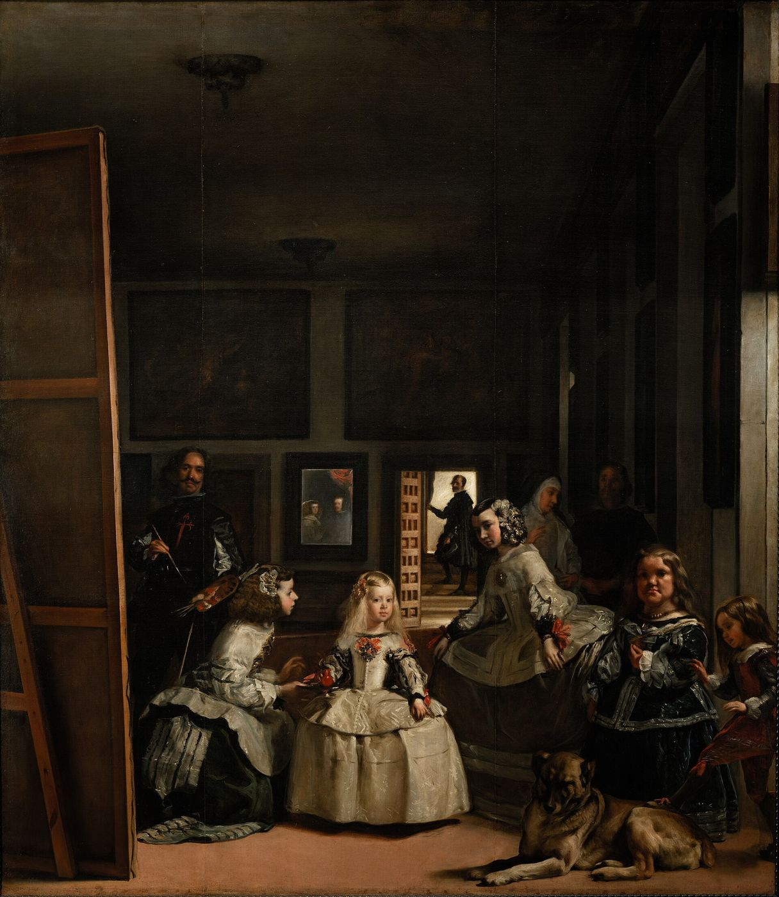

Cet essai a d’abord paru en turc. La version française est de ma main. La séance du 18 mai 1966 est citée d’après un texte fondé sur la sténographie ; Foucault et Lacan sont cités dans l’original français.
Tu ne me vois pas d’où je te regarde.
Jacques Lacan, séminaire, 18 mai 1966


I
Au printemps 1966, deux livres annonçaient à Paris un climat de pensée où, deux ans plus tard, plus rien ne serait comme avant. En avril, Gallimard publia Les Mots et les choses de Michel Foucault ; contre toute attente pour un livre de philosophie, il devint vite un événement de librairie. En novembre allaient paraître les Écrits de Lacan. Le livre de Foucault s’ouvrait sur l’analyse d’un tableau qui fonctionne comme la clé de tous les chapitres suivants : « Les suivantes », le tableau peint par Velázquez en 1656 et connu sous son nom espagnol, Las Meninas. Foucault y voyait une image de l’ordre de la représentation de l’âge classique, les XVIIe et XVIIIe siècles : il y avait un lieu que le peintre regarde, que tous les personnages du tableau regardent, mais qui n’apparaît lui-même que pâlement dans le miroir du mur du fond ; c’était la place du roi et de la reine, le centre souverain autour duquel s’ordonne la représentation. Le chapitre s’achève sur sa formule la plus citée : il y a peut-être, dans ce tableau de Velázquez, comme la représentation de la représentation classique.1
Dans les mêmes mois, Lacan donnait à l’École normale supérieure son treizième séminaire : L’objet de la psychanalyse. La question du séminaire était d’élaborer, dans différents registres, le concept que Lacan avait commencé à construire les années précédentes, l’objet a, l’objet cause du désir, ce qui choit du corps et reste comme un déchet. L’un de ces objets était le regard, que Lacan avait longuement traité en 1964, dans son onzième séminaire, Les quatre concepts fondamentaux de la psychanalyse. Certains de ses auditeurs avaient lu le premier chapitre du livre de Foucault et l’avaient signalé à Lacan comme un point d’intersection remarquable entre deux champs de recherche. Le 11 mai 1966, Lacan projeta une diapositive des Ménines et rattacha le tableau à sa propre question, la structure du regard. Une semaine plus tard, Foucault était parmi les auditeurs.2
II
La sténographie de la séance du 18 mai est le compte rendu d’une scène avant d’être un débat théorique. Lacan ouvre en saluant Foucault et dit tenir sa venue au séminaire pour un grand honneur. La séance, ajoute-t-il, consistera moins à se livrer devant lui à ses exercices habituels qu’à lui montrer le but véritable de ces réunions, un but de formation. La parole passe ensuite au psychanalyste André Green. Green rappelle qu’à la séance précédente la diapositive avait été très mal projetée et que, faute de lumière, certains détails du tableau étaient devenus invisibles : ce qui avait disparu, c’était précisément le peintre lui-même et le couple qui chuchote à l’arrière-plan. Green propose de lire cet effacement non comme un défaut technique, mais comme un lapsus ou un oubli, comme une formation de l’inconscient. Lacan fait baisser les rideaux et projeter de nouveau le tableau, en expliquant que le défaut tenait à l’ampoule, que la diapositive obtenue de l’École du Louvre était excellente et qu’il était allé s’excuser de l’avoir injustement maudite.
Cette petite scène est comme une miniature du débat que la séance va ouvrir. Un tableau apparaît sur un écran dans des conditions de lumière particulières ; ce qui est vu dépend de la position de celui qui regarde, des défauts de l’appareil et du désir de celui qui regarde. La question de Green anticipe la thèse que Lacan va construire dans la séance : ce qui importe dans le tableau, ce sont moins les figures qui apparaissent que les lacunes de l’image, les effacements, les lieux où le regard est capté et se perd.
Dans la sténographie, les paroles de Lacan à Foucault avancent sur un ton où l’éloge et la critique, la courtoisie et l’insistance s’entrelacent. Parcourant les titres de chapitre du livre de Foucault, parler, échanger, représenter, Lacan relève une absence qui l’a frappé : le mot compter n’y figure pas. Au cœur du XVIIe siècle se trouve, selon Lacan, un penseur méconnu, voire moqué, mais qu’il faudrait compter parmi les esprits les plus brillants : Girard Desargues, le fondateur de la géométrie projective. Cette géométrie, restée hors de l’analyse foucaldienne de l’époque, est l’instrument dont Lacan va se servir pour lire le tableau. À un moment, Lacan compare le rapport entre l’inconscient et le cogito en psychanalyse au concept d’« impensé » dans le livre de Foucault, et demande à Foucault s’il ne déforme pas ce qu’il dit. Dans la sténographie, presque la seule parole de Foucault au séminaire ce jour-là est sa brève réponse à cette question : vous ne déformez pas, vous reformez.3
III
Le centre de la thèse de Lacan est une correction minime, mais décisive, de la formule de Foucault. Pour Foucault, Les Ménines sont la représentation de la représentation : le tableau du système infini de renvois réciproques entre les mots et les choses propre à l’âge classique. Pour Lacan, le tableau n’est pas la représentation de tous les modes de la représentation, mais, selon un terme qu’il emprunte à Freud et sur lequel il insiste, le représentant de la représentation : la Vorstellungsrepräsentanz.4
La différence entre les deux formules est bien plus qu’un jeu de mots. La formule de Foucault lit le tableau comme l’image d’une épistémè, d’un ordre du savoir ; le tableau représente la manière dont une époque se représente elle-même. Dans cette lecture, tout reste sur le plan de la visibilité : le tableau est un miroir qui nous montre le fonctionnement de la représentation, et le vide en son centre, la place du roi, est le point de l’incessant va-et-vient entre représenté et représentant, de l’échange de places entre celui qui regarde et celui qui est regardé. La formule de Lacan lit le tableau comme quelque chose qui tient lieu d’une représentation, qui vient à sa place. Chez Freud, le représentant de la représentation est ce qui est refoulé : le terme qui tombe dans l’inconscient et qui, sans jamais apparaître directement, y organise les autres représentations. Ce que Lacan trouve dans Les Ménines, ce n’est pas le système de représentation d’une époque, mais la structure d’un manque au sein du champ visuel, de quelque chose d’invisible, d’un point où le sujet lui-même est pris.
Lacan rend cette différence concrète à partir de l’élément le plus discuté du tableau : au bord gauche, de dos, la toile haute de plus de trois mètres. Selon la lecture courante des historiens de l’art, et de Foucault, le peintre y fait le portrait du roi et de la reine qui apparaissent dans le miroir. Dans la sténographie, Lacan rejette cette lecture sur un ton presque moqueur : peut-on vraiment penser que Velázquez aurait pris une immense toile de la même taille, avec le même cadre, pour peindre les deux petites figures du fond ? Pour Lacan, le tableau dans le tableau est le tableau lui-même, celui que nous regardons. Sur la toile qui nous tourne le dos, le peintre peint la scène où il se trouve, le tableau devant lequel nous nous tenons. Mais alors, la seule représentation représentée dans le tableau est une représentation qui ne peut se montrer, qui nous tourne le dos. La représentation opère précisément là où elle ne se montre pas, comme une carte retournée, comme un vide qui force celui qui regarde à abattre la sienne.
IV
Pour montrer la structure de ce vide, Lacan revient à la géométrie projective qu’il avait patiemment exposée à ses auditeurs lors des séances précédentes. Dans un dessin en perspective, depuis la Renaissance, il y a un point de l’œil, un plan du sol et un plan du tableau ; le plan horizontal qui passe par le point de l’œil coupe le plan du tableau selon la ligne d’horizon, et les parallèles convergent en un point de fuite sur cet horizon. Lacan souligne qu’il ne faut pas appeler ce point « point de l’œil », mais « point sujet » : c’est un sujet nécessaire à la construction de la perspective, mais qui n’est lui-même inscrit nulle part dans le tableau et n’y apparaît que comme une trace, comme un point quelconque de la ligne d’horizon. La géométrie de Desargues, selon Lacan, montre une seconde chose : le plan qui passe par le point sujet parallèlement au plan du tableau ne peut d’aucune manière s’inscrire dans le tableau ; il correspond à une ligne à l’infini du tableau, et le second pôle du sujet se situe en ce point à l’infini.5
Le répondant de cette structure abstraite dans le tableau est, pour Lacan, la distance entre le peintre et sa toile. Velázquez se tient dans le tableau, pinceau en main, mais à une distance d’où il ne peut atteindre sa toile ; même avec son long pinceau, il ne peut la toucher. On dit qu’il a reculé pour mieux voir ; Lacan l’accorde, mais dit que ce qui importe est cette distance, l’intervalle entre le plan du tableau et le point sujet. Le tableau est fait pour nous faire sentir cet intervalle. Au mur du fond, sur le seuil d’une porte ouverte, un homme va vers la lumière, vers le dehors, vers une ouverture ; Lacan lit cette figure comme une autre ouverture posée parallèlement à l’intervalle du premier plan. L’effet captivant, parfois inquiétant, du tableau vient de ce qu’il n’est pas un tableau en perspective ordinaire, de son effort pour attirer en lui, en étendant ses limites, la distance entre le point sujet et le plan du tableau, la place où se tient celui qui regarde.
Lacan rejoint ici la thèse sur le regard qu’il développait depuis le onzième séminaire. Le tableau est un piège à regard. Devant un tableau, avec l’aisance du promeneur d’exposition, nous croyons qu’il ne nous arrive rien ; nous sommes pourtant pris comme une mouche dans la glu. Ce que fait le peintre, c’est nous faire entrer dans le tableau. Lacan trouve le lieu de cette capture dans le seul élément du tableau qui choit, s’évanouit, ne se laisse pas saisir : le regard comme objet a. Le regard ne peut jamais être saisi dans le miroir ; car le regard, selon l’image qu’emploie Lacan dans la séance, est la fenêtre que nous constituons nous-mêmes en ouvrant simplement les yeux. Dans la lecture de Foucault, la clé du tableau est le miroir ; dans celle de Lacan, la fenêtre. Le miroir est le plan de la réciprocité imaginaire, où celui qui regarde revient à sa propre image. La fenêtre est le lieu où s’ouvre le regard lui-même, comme un trou dans le champ visuel, comme la place invisible du sujet.


V
Cette thèse prolonge une lecture de deux ans antérieure. Au printemps 1964, dans le onzième séminaire, Lacan s’était servi des Ambassadeurs de Holbein pour montrer la structure du regard. Au premier plan, aux pieds des deux ambassadeurs, se trouve une forme anamorphique qui, vue de face, ressemble à une tache insignifiante, mais qui devient un crâne quand on la regarde de côté, en quittant le tableau. Pour Lacan, ce crâne est le lieu où le regard lui-même devient visible dans le tableau : ce qui nous prend, nous les sujets regardants, au moment où nous regardons, et nous réduit à rien. Dans le même séminaire, Lacan formulait la déception fondamentale du rapport amoureux à partir de cette structure du regard : tu ne me regardes jamais du lieu d’où je te vois.6
Le 18 mai 1966, Lacan fait dire par Velázquez une autre variante de cette formule. Devant le tableau se tient quelqu’un qui supplie le peintre et dit « fais voir » ; c’est, pour Lacan, de cette voix, de cette demande qu’il faut partir. La réponse du peintre est la phrase de l’épigraphe : tu ne me vois pas d’où je te regarde. Lacan la tient pour la formule fondamentale qui explicite, dans toute relation de regard, dans l’exhibitionnisme comme dans le voyeurisme, la structure de la pulsion scopique. Ce qui est en jeu est ce que Lacan soulignait à partir de l’article de Freud de 1915, « Pulsions et destins des pulsions » : la pulsion scopique trace un circuit qui va de voir à être vu, de l’aller au retour, et l’objet de ce circuit n’est pas l’œil, mais le regard.7
Dans cette formule, la distinction entre le regard et la vision apparaît en pleine lumière. La vision est une relation où un sujet voit un objet, une relation qui paraît réciproque et symétrique ; le miroir en est l’image. Le regard rompt cette symétrie. Je te vois, mais tu ne me vois pas d’où je regarde ; et le lieu d’où je regarde m’est invisible à moi aussi. Dans la séance, Lacan rappelle qu’il ne tombera pas dans le piège de la réciprocité, qu’il dit depuis longtemps que la relation du sujet à l’Autre n’est pas réciproque. Les trois pièces qui composent le fantasme, deux sujets et un objet a, sont la structure de cette non-réciprocité, et dans cette structure l’une des pièces se perd toujours.
VI
La question de savoir jusqu’où Lacan avait raison contre Foucault a été rouverte avec la publication de la séance. Selon le récit de Miller, Lacan voulait montrer à Foucault qu’il n’avait rien compris au tableau ; mais cette lecture est en tension avec le ton élogieux, parfois presque réservé, de la sténographie, et les critiques de la nouvelle édition y ont vu, eux aussi, une caricature.8 Il est plus fécond de voir dans les deux lectures les réponses à deux questions différentes. La question de Foucault est historique : comment une époque ordonne-t-elle le savoir, le langage et la place du sujet, et en quel point cet ordre se défait-il ? La question de Lacan est structurale : où, dans le champ visuel, le sujet est-il pris, et quel est l’objet de cette capture ? Dans la séance, Lacan demande ouvertement à Foucault : est-il possible d’écrire une histoire de la subjectivité, et les mêmes problèmes de structure ne se sont-ils pas toujours posés de la même manière à l’être parlant, à chaque époque ? La question met à nu la tension entre l’historique et le structural, entre l’archéologie de Foucault et la prétention de la psychanalyse à l’universel, et elle n’est pas close aujourd’hui.
Mais ce que cette séance a de plus intéressant aujourd’hui se cache peut-être dans une plaisanterie de Lacan. À la séance précédente, parlant de la fonction mystérieuse du miroir dans le tableau, Lacan avait conclu en disant que ce miroir, dont on ne sait que faire, ressemble étrangement à notre écran de télévision. Le 18 mai, il reconnaît que c’était un mot d’esprit. Soixante ans plus tard, le mot d’esprit se lit comme une prévision. Nous sommes tous aujourd’hui, chaque jour, devant des écrans qui reflètent notre propre image et à travers lesquels d’autres nous regardent. Dans un appel vidéo, à côté du visage de notre interlocuteur, notre propre visage se tient dans une petite fenêtre : comme le miroir des Ménines, une image qui reste hors de la scène, mais qui l’ordonne.
La clinique psychanalytique rencontre chaque jour les effets de cette structure. L’angoisse d’être vu, la honte, la sidération sous le regard, le besoin de surveiller sans cesse sa propre image traduisent la formule de Lacan dans une langue clinique : on ne peut jamais voir le lieu d’où l’on est vu, et ce lieu invisible est celui qui angoisse le plus. Dans une analyse menée en ligne, le fait que l’analysant voie son propre visage à l’écran est donc plus qu’un détail technique à régler ; c’est un miroir installé dans la séance, un élément qui entre dans la circulation du regard et du fait d’être vu. La thèse de Lacan de 1966 reste l’un des instruments les plus aigus pour comprendre pourquoi ce miroir n’est jamais neutre : l’image vue à l’écran ne capte pas le regard ; le regard n’est pas dans l’écran, mais dans l’intervalle que l’écran ouvre en nous, dans le fait d’être regardé d’où nous ne voyons pas.
VII
Lacan termina la séance du 18 mai en faisant circuler parmi ses auditeurs la reproduction d’un tableau tiré d’une exposition Balthus alors ouverte au pavillon de Marsan. Quand il avait vu ce tableau dans ce contexte, dit-il, à un moment qu’il laissait ses auditeurs attribuer à sa lucidité ou à son délire, il s’était dit : « C’est Les Ménines. » Il leur laissa un devoir pour les vacances : pourquoi ce tableau est-il Les Ménines ?
Ce devoir est peut-être l’un des plus beaux exemples du style d’enseignement de Lacan. Lacan ne donne pas de réponse ; il transmet à ses auditeurs une question, un manque. Qu’un tableau soit un autre tableau ne tient pas à une ressemblance visible à sa surface, mais à sa structure, à l’ordre des points où il capte et perd le regard. Soixante ans plus tard, avec la publication du treizième séminaire, ce devoir est de nouveau devant les lecteurs. Chaque lecteur qui va du texte établi du séminaire à la sténographie, qui regarde la reproduction du tableau, qui tente de comprendre la géométrie de Desargues, fait ce que Lacan demandait cette année-là à ses auditeurs : chercher, dans ce qui est vu, ce qui ne l’est pas, la place de celui qui regarde.
Notes
- M. Foucault, Les Mots et les choses : Une archéologie des sciences humaines, Paris, Gallimard, 1966, chapitre premier, « Les suivantes ». La formule de Foucault : « Peut-être y a-t-il, dans ce tableau de Vélasquez, comme la représentation de la représentation classique ». ↩︎
- J. Lacan, Le Séminaire, Livre XIII : L’objet de la psychanalyse (1965-1966), texte établi par J.-A. Miller, Paris, Seuil, 2026. Pour la séance du 18 mai 1966, cet essai utilise le texte fondé sur la sténographie qui circule sous la forme d’une « restauration » révisée de la traduction anglaise de C. Gallagher ; le texte établi du Seuil peut s’en écarter dans la formulation. Sur l’importance de cette distinction, voir l’essai « Le texte établi » sur ce site. ↩︎
- Dans les transcriptions fondées sur la sténographie, Foucault répond à la question de Lacan, qui craint de déformer ses propos, par un verbe de même racine : « vous reformez ». Lacan accepte aussitôt la réponse. ↩︎
- Freud emploie ce terme dans ses écrits métapsychologiques de 1915, en particulier « Die Verdrängung » (Le refoulement) et « Das Unbewußte » (L’inconscient), pour nommer le représentant de la pulsion dans le champ psychique. Lacan a tenu à le traduire par représentant de la représentation et, dans le onzième séminaire, l’a traité comme l’objet véritable du refoulement. ↩︎
- Dans la même séance, Lacan nomme Alberti, Jean Pélerin (Viator) et Dürer comme les fondateurs de la perspective et souligne que la perspective n’a rien à voir avec la perception du relief ou la vision binoculaire, mais avec le mode selon lequel le peintre, comme sujet, se met dans le tableau. Il compare la manière dont les peintres dits primitifs se mettaient dans le tableau comme donateurs à l’entrée du peintre dans le tableau, à l’âge de la perspective, comme une absence. ↩︎
- J. Lacan, Le Séminaire, Livre XI : Les quatre concepts fondamentaux de la psychanalyse (1964), texte établi par J.-A. Miller, Paris, Seuil, 1973, séances de février et mars 1964 réunies sous le titre « Du regard comme objet petit a ». Dans ces mêmes séances, Lacan définit le tableau comme ce qui apprivoise le regard, invite à le déposer : un dompte-regard. ↩︎
- S. Freud, « Triebe und Triebschicksale » (1915). Freud y étudie la transformation entre les formes active et passive du plaisir de voir (Schaulust) à travers le couple voyeurisme-exhibitionnisme. Dans la séance du 18 mai, Lacan dit s’appuyer sur cet article non seulement parce qu’il serait un texte « sacré » de Freud, mais parce qu’il est l’un de ses textes suprêmes. ↩︎
- D. Pinaud, « La deuxième vie de Lacan (Le Séminaire. Livre XIII) », Diacritik, 28 janvier 2026. Pinaud qualifie de caricature le verdict rapporté par Miller et écrit que la réalité est plus subtile. ↩︎
Bibliographie
- Foucault, M. (1966). Les Mots et les choses : Une archéologie des sciences humaines. Paris : Gallimard.
- Freud, S. (1915). Triebe und Triebschicksale. Internationale Zeitschrift für ärztliche Psychoanalyse, 3.
- Freud, S. (1915). Die Verdrängung. Internationale Zeitschrift für ärztliche Psychoanalyse, 3.
- Lacan, J. (1973). Le Séminaire, Livre XI : Les quatre concepts fondamentaux de la psychanalyse (1964). Paris : Seuil.
- Lacan, J. (2026). Le Séminaire, Livre XIII : L’objet de la psychanalyse (1965-1966). Paris : Seuil.
- Pinaud, D. (2026, 28 janvier). La deuxième vie de Lacan (Le Séminaire. Livre XIII). Diacritik.